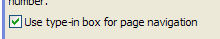

Page Navigator - Direct Page Navigation
Property name: 'Record navigator layout' ('Properties' pane)
You can now select the target page by typing the page number into an edit box and pressing Enter. The benefit of this method of page navigation is that it gives you direct access to any page in the Grid. By contrast, the V9 and earlier technique of providing page links can only allow you direct access to a limited number of pages that are close to the current page.
To turn on this feature, open the 'Record navigator layout' genie and check the 'Use type-in box for page navigation' checkbox.
|  |
|
Setting the page navigation style |
|
Record navigator showing type-in box for page navigation |
|
Record navigator showing V9 style page links. |